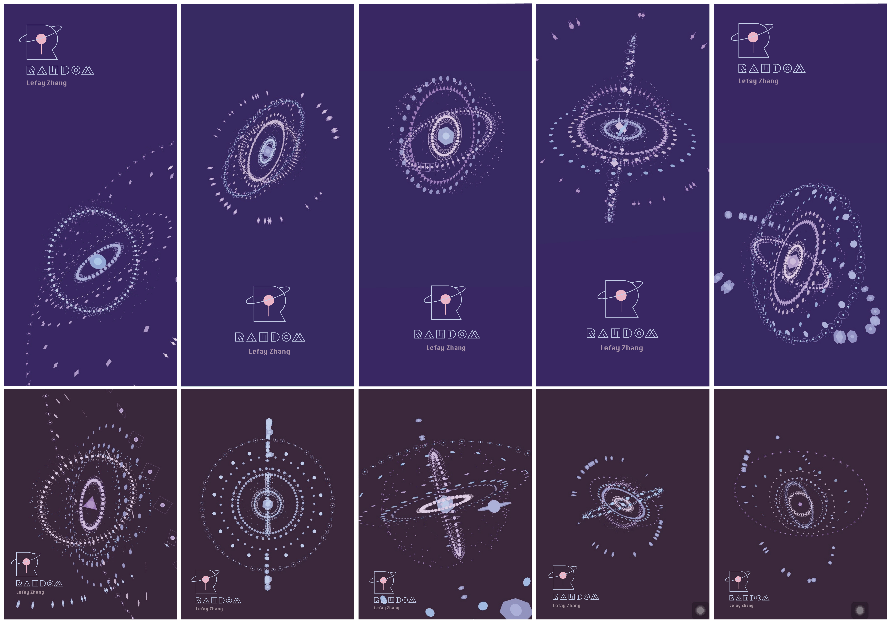
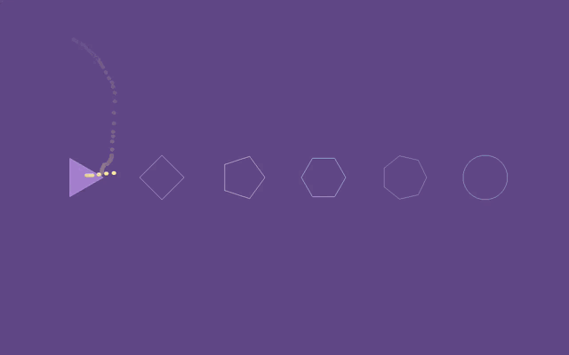
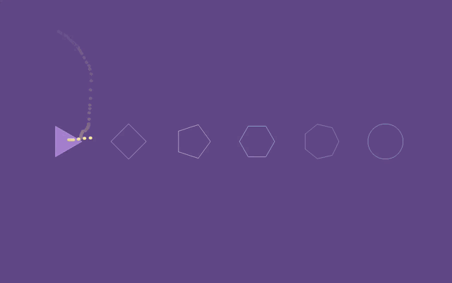

RANDOM
作品名为[Random]意为随机的选择.
这是一件基于电脑界面与手机等移动客户端的编程交互设计产物。用户通过随机点击界面上的图形，屏幕中会持续生成新的图形组合。
柔和的色彩与安静的音乐让人放慢节奏心绪平静。音乐掌控图形的旋转节奏，通过一种简单／随机的交互方式感受宁静的美。
作品中的代码运用了很多随机参数，我想借这件作品传达给观众Random这种自我把握节奏的感觉与随机的美。
作品是用openframeworks制作的 / 这是一件基于电脑端可交互的作品，也制作了ios端app版本。
This project named “Random”,Which means a random choice.
This is a computer interface-based interactive design product, also versions of ios app.
The audience randomly selected graphics on the interface to generate a new graphic combination.
Soft colors and quiet music make people slow down the rhythm of the heart.
The rhythm of the music is controlled by the rhythm of the graphics, With simple function of the interaction to feel the beauty of peace.
I also use a lot of random parameters in this project. I would like to convey to the audience this”Random”random beauty though this small project.
This project is made of the openframeworks. 
 



- Designed by lefay | 2015 -